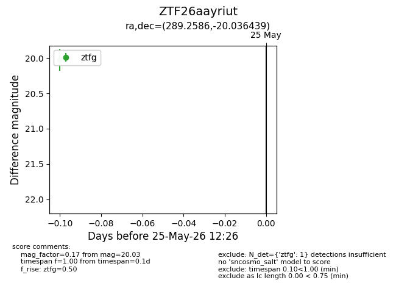
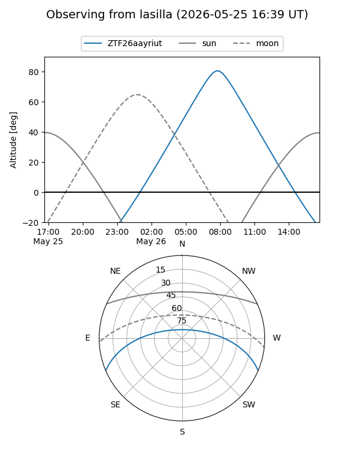
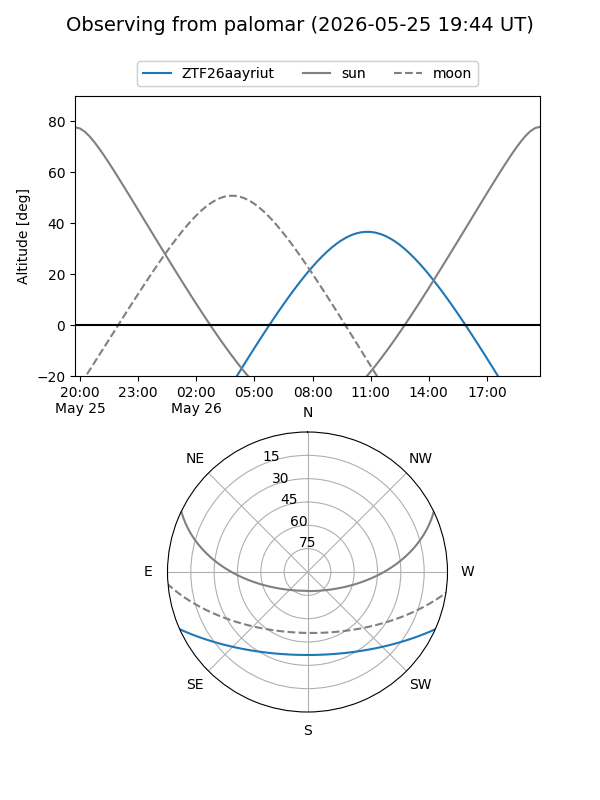

ZTF26aayriut
Target ZTF26aayriut at 2026-05-25 12:28
Aliases and brokers:
lsst-FINK: link
lsst-Lasair: link
lsst-ALeRCE: link
ztf-FINK: link
ztf-Lasair: link
ztf-ALeRCE: link
alt names
ZTF26aayriut (ztf,fink_ztf)
Coordinates:
equatorial (ra, dec) = 289.2586,-20.03644
equatorial (HMS+DMS) = 19:17:02.06,-20:02:11.18
galactic (l, b) = (17.5309,-14.44301)
Flags:
Photometry:
last ztfg=20.03
1 ztfg detections
Lightcurve

Visibility


Additional plots